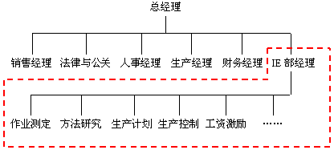
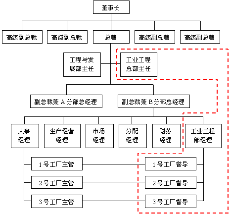
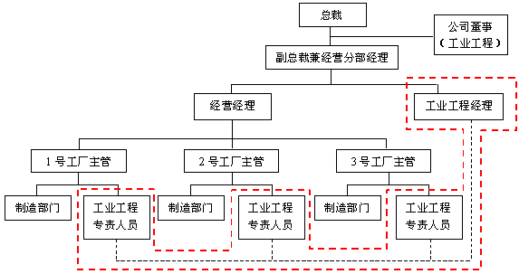
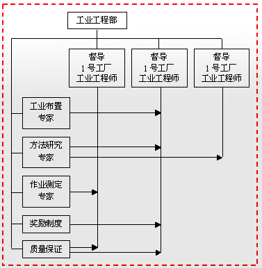

1 . 教学安排
2 . 工业工程的常用技术
3 . 企业中的工业工程活动
 工业工程师应具备的知识和技术
工业工程师应具备的知识和技术
企业中的工业工程组织形式
企业中的工业工程活动
4 . 工业工程应用效果
5 . 思考与练习题
 返回课程学习首页
返回课程学习首页
企业中的工业工程组织形式
早期的工业工程主要围绕作业现场，改进操作方法，提高劳动效率，活动范围较小，因此，一般都分散在车间和有关部门进行，工业工程人员受车间主任或生产负责人领导，致力于提高车间的效率和生产率。各企业应用工业工程的程度，也有很大差别，很少有专门的工业工程组织。
随着工业工程的发展和成熟，不仅其应用领域扩大，而且在一个生产组织内部工业工程活动范围也扩大了，从原来只研究生产过程与现场管理，向前延伸到经营决策，向后延伸到产品销售与市场服务。现代工业工程成为研究整个生产(包括宏观和微观系统)整体优化的工具，活动内容远比过去丰富。因而，企业普遍都设立独立的工业工程部门，以专门负责工业工程方面的业务。
企业设立工业工程部门没有固定的模式，下面简要介绍几种典型的工业工程部门组织形式及在企业中的位置。
(1) 中小型企业的工业工程部组织结构形式，如图2-2所示，工业工程人员少，集中由工业工程部经理领导，组织结构简单。

图2-2 中小型企业的工业工程组织
(2) 大中型企业的集中式的工业工程组织结构形式，如图2-3所示，工业工程人员集中属工业工程部管，被指派到各部门服务。

图2-3 集中式的工业工程组织
(3) 大中型企业的分散式的工业工程组织结构形式，如图2-4所示，工业工程人员固定在低层次部门工作，他们同高层次的工业工程经理只是保持业务上的联系，接受指导和监督。

图2-4 分散式的工业工程组织
(4) 大中型企业的矩阵式的工业工程组织结构形式，图2-5所示，工业工程人员集中为工业工程部的成员，但根据需要，不同的工业工程人员被指派到工厂或车间、部门去工作，受督导管理，任务完成后再按需要到别的地方，具有很大的灵活性。

图2-5 矩阵式的工业工程组织